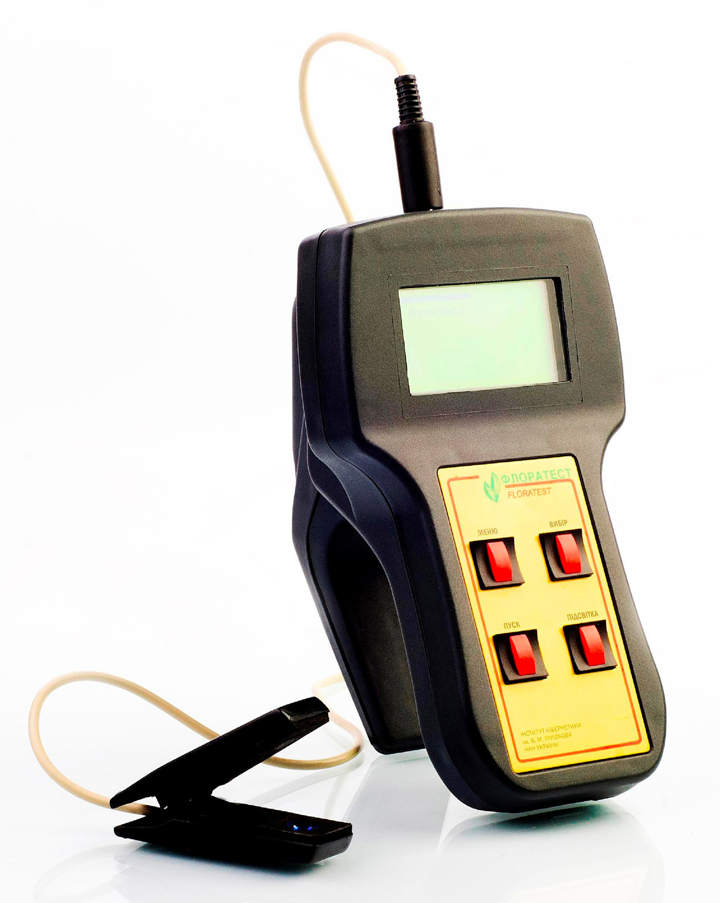

Portable device 'FLORATEST'

General information
Portable device 'Floratest' for express-diagnostics of plant state allows easy to estimate the level of
influence of stress factors of natural or anthropogenic origin on alive plants. The device is based on
real time processing of the curve of chlorophyll fluorescent induction. The portable device 'Floratest'
measures intensity of chlorophyll fluorescent induction without plant destruction. By the form of curve
of chlorophyll fluorescent induction (like to cardiogram) the influence of stress factor to the plant is
determined.
Device and relevant diagnostic methods refer to the area of biological object researches by detecting
their biophysical properties, particularly native chlorophyll fluorescent induction. Device is defined
as smart biosensor with fragment of live plant as sensing element.
Express-diagnostic of plant state is based on using of features of separate specific sections of
chlorophyll fluorescent induction curve, which refer to separate areas of photosynthesis chains as
diagnostic features. By chlorophyll fluorescent induction curve form it is easily to detect influence of
one or another factor on the plant state.
Photosynthesis and induction of fluorescence of chlorophyll operate in direct competition for a finite pool
of absorbed light energy. Any change in energy utilization by one process produces a complementary change in
the others. So this fact enables induction of fluorescence of chlorophyll to be used as express and reliable
non-invasive estimation of photosynthesis. Portable device 'Floratest' is intended specifically to detect
the chlorophyll fluorescence emission from leaf of plant. The main features of device are wide dynamic
range, high precision and speed, low quiescent current and low operating voltage.
Application areas of portable device 'Floratest':
- Express estimating plant life activity after drought, freeze, imps, pesticide application;
- Express estimating optimal dozes of fertilizers and biological active admixtures. It makes possible to reduce nitrate content in fruits and vegetables;
- Precision farming technology optimization using the device for validation of remote observation of agricultural lands;
- Express estimating land pollutions by pesticides, heavy metals, industrial emissions and their impact to green planting in megalopolis;
- Water and energy saving in artificial watering;
- Forecasting future crop;
- Automating scientific research in plant physiology area in universities and research institutes.
Main developer:
Volodymyr ROMANOV